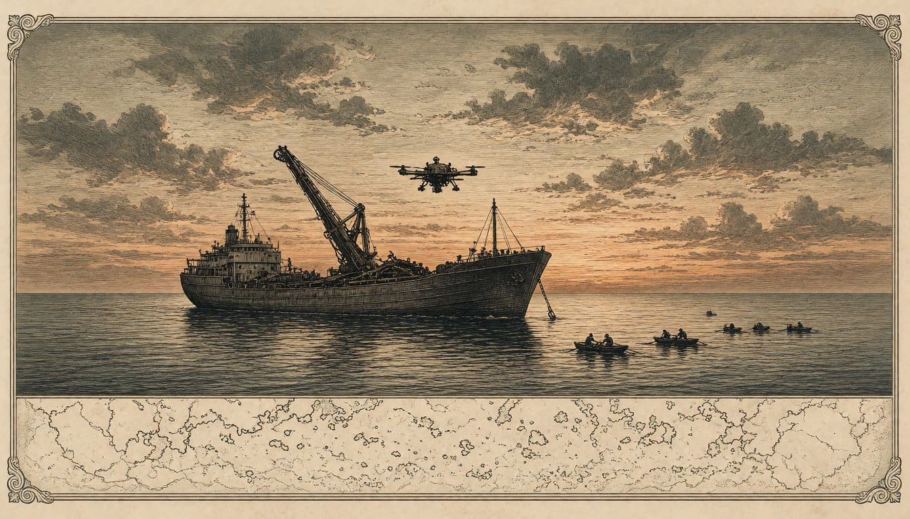

Drone hits cargo ship MV Larissa 1, no injuries reported
Defence Minister Ștefan-Radu Oprea said the impact damaged a crane and an investigation is under way. The Insider reports Romania proposed a joint NATO command for drone protection. Commission President Ursula von der Leyen announced €50 million for a maritime security hub with Bulgaria.

A drone struck the cargo ship MV Larissa 1 in Romanian waters off Sfântu Gheorghe on Friday evening, Defence Minister Ștefan-Radu Oprea confirmed at the Military Port of Constanța on Saturday. Oprea said no one was injured or killed; the drone impact damaged a cargo crane and no fire broke out. An investigation into the strike is under way.
Romania earlier proposed that the Black Sea NATO countries create a joint command for protection against drones, according to The Insider. Romanian pilots had shot down 6 drones by 14 November, Oprea said. He called them heroes within NATO's forces.
The Larissa 1 sails under the flag of Palau, according to Starboard Maritime Intelligence data examined by The Insider. The ship is owned by AKN SHIPPING LTD, a company registered in Liberia and based in Turkey, the same data shows. The ship was sailing from Bizerte in Tunisia to the Romanian port of Sulina, from where it was to continue to Ukraine.
The Ministry of National Defence said its radar surveillance system detected an aerial target on the evening of 13 November, south-east of Snake Island, in Ukrainian airspace. The ministry stated that no violations of Romanian airspace were reported. Oprea said he had been informed the night before that a drone hit the ship. He said he was in contact with the Navy, the Ministry of Internal Affairs and the Coast Guard.
European Commission President Ursula von der Leyen said on 9 November that she and the Bulgarian government agreed to fast-track work on the Black Sea Maritime Security Hub and set a clear timeline. She announced €50 million in funding to back the fast-tracked work.